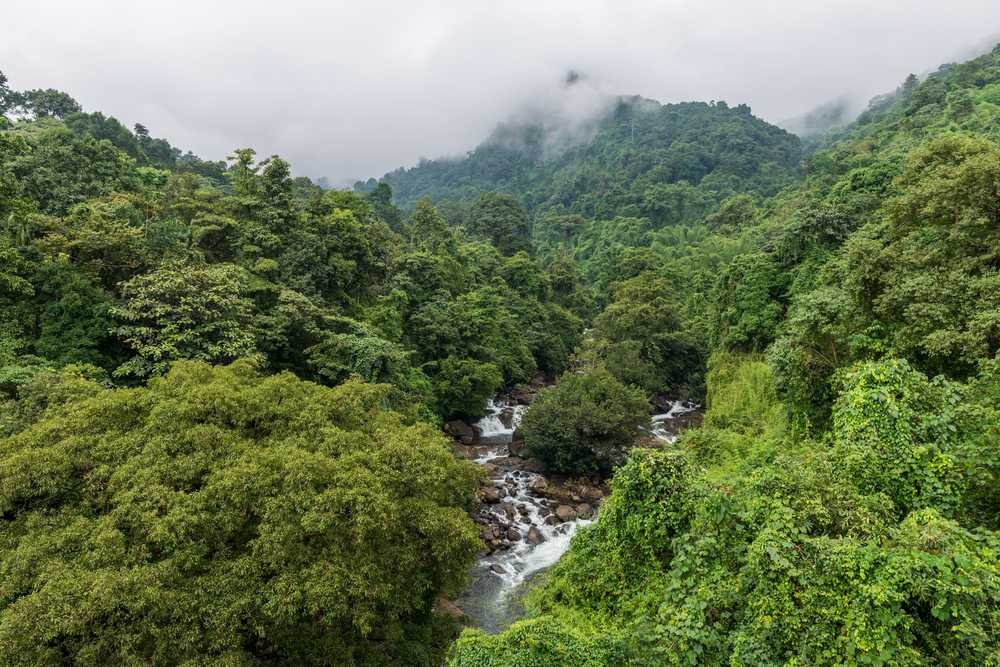
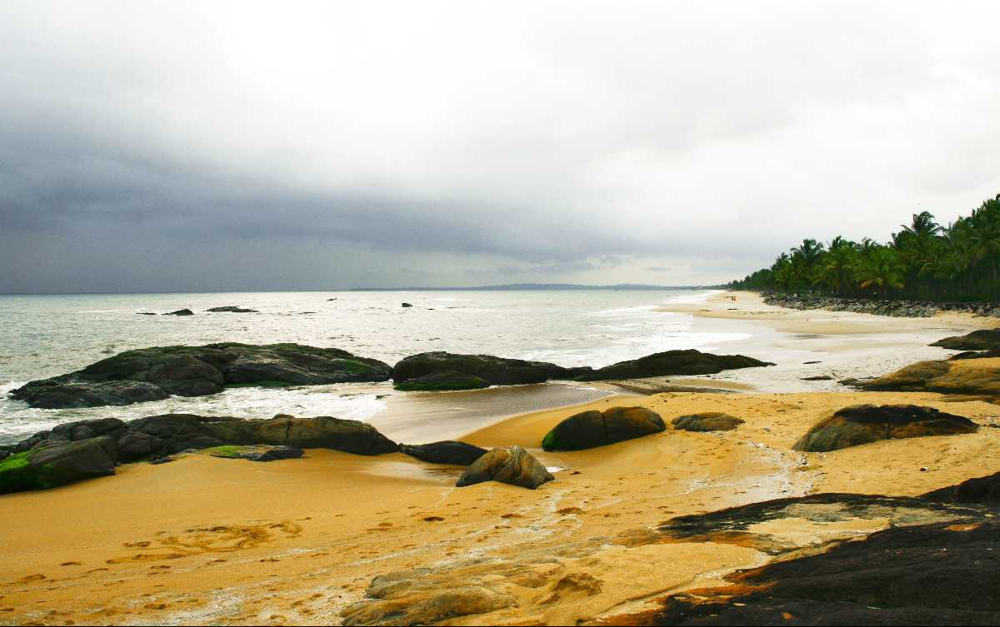

Thusharagiri Falls

Lying in the Western Ghats of Kozhikode district in Kerala, Thusharagiri Fall cascades down as three waterfalls. Located in a small tribal village, the name of the falls means ???snow covered mountains'.Trekkers and rock climbers will find trekking trails towards Lakkidi Ghat passing through thick foliage & lush, green surroundings offering its visitors a sheer delight.
Read More...Kappad Beach

Kappad Beach in Kerala is infamous for being the destination of Vasco Da Gama, the famous Portuguese explorer. It is the shore that made the explorer the first to reach India by sea. Today, Kappad is one of the most scenic beaches India has to offer. It is lined with palm trees and sedimentary rocks that decorate the shore and give any visitor a serene feeling. The idyllic beach is apt for rejuvenation of body and soul. Since 1498, Kappad became a very important port with regard to trade between Europe and Asia. It was this voyage of Vasco Da Gama that led to the establishment of a permanent route for the Europeans to reach India. This beach was the reason for the Spice route to exist.
Read More...Beypore

Beypore is a cosy coastal town tucked away in the small but striking Kozhikode District. Located at the mouth of the energetic Chaliyar River, this town is covered in vibrant shades of green and surrounded by mystic shades of blue. When under the reign of Tipu Sultan, who was the ruler of Mysore, this town was named Sultan Pattanam.In spite of being a small town, it is very famous for ship-building. The shipbuilding yard here is renowned for the construction of Urus and Dhows, the traditional Arabian trading vessel. This craft is over 1500 years old now and is carried out carefully by the expert craftsmen who possess extraordinary skills.
Read More...